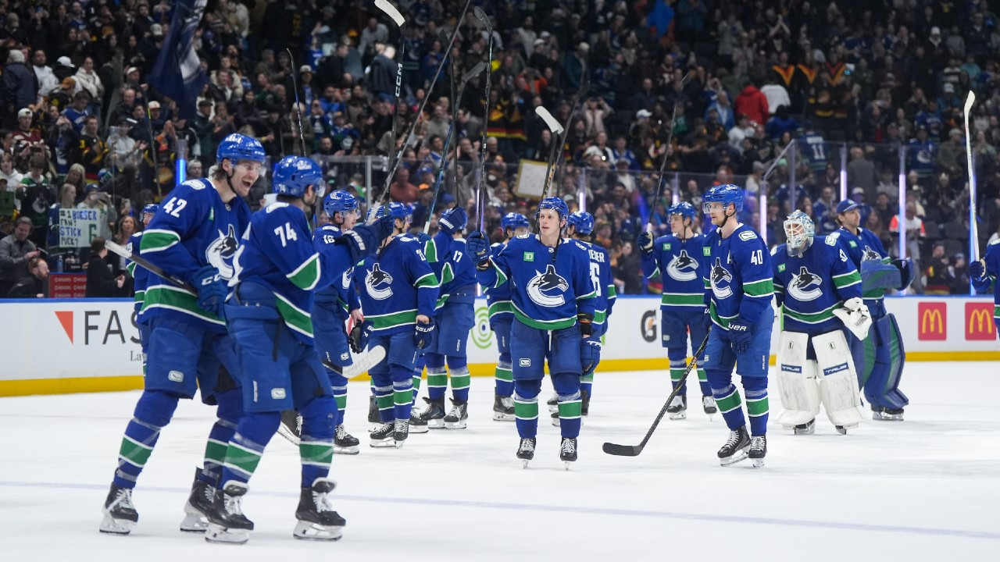

About
The Vancouver Canucks are an NHL franchise competing in the Pacific Division of the Western Conference, playing their home games at Rogers Arena in downtown Vancouver. The 2025-26 season was a difficult one — the Canucks became the first team eliminated from playoff contention, missing the playoffs for the second season in a row, and finished with the worst home record in franchise history at 9-27-5. They finished 8th in the Pacific Division with a 25-49-8 record and 58 points, ranking last in the NHL in goals against.
History
The Vancouver Canucks joined the NHL in 1970 as an expansion team along with the Buffalo Sabres. The team has advanced to the Stanley Cup Final three times — losing to the New York Islanders in 1982, the New York Rangers in 1994, and the Boston Bruins in 2011 — and have never won the Cup. They won the Presidents' Trophy in back-to-back seasons in 2010-11 and 2011-12, but playoff success eluded them each time. Notable eras include Pavel Bure in the early 90s and the Sedin twins through the 2000s and 2010s.
